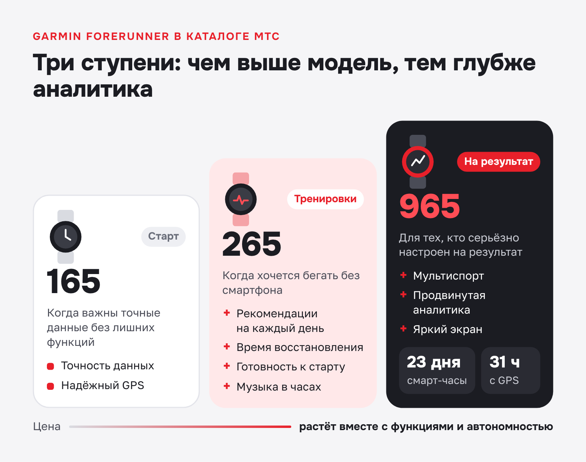
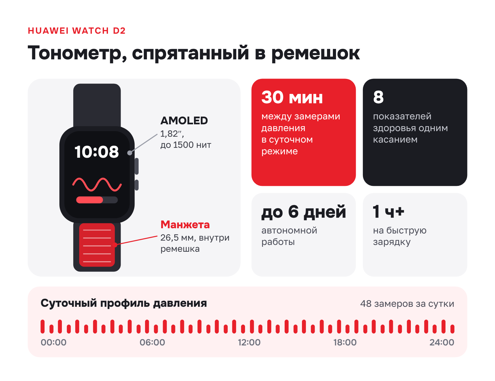
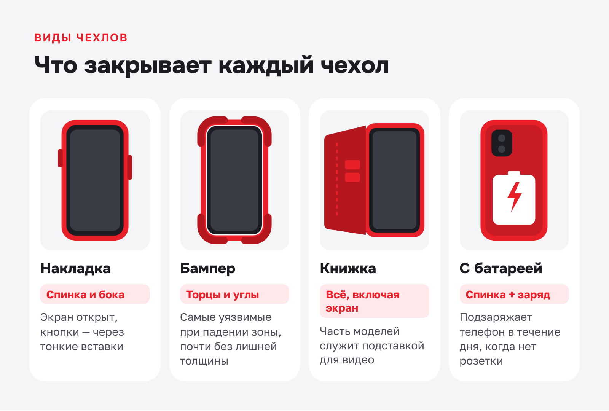
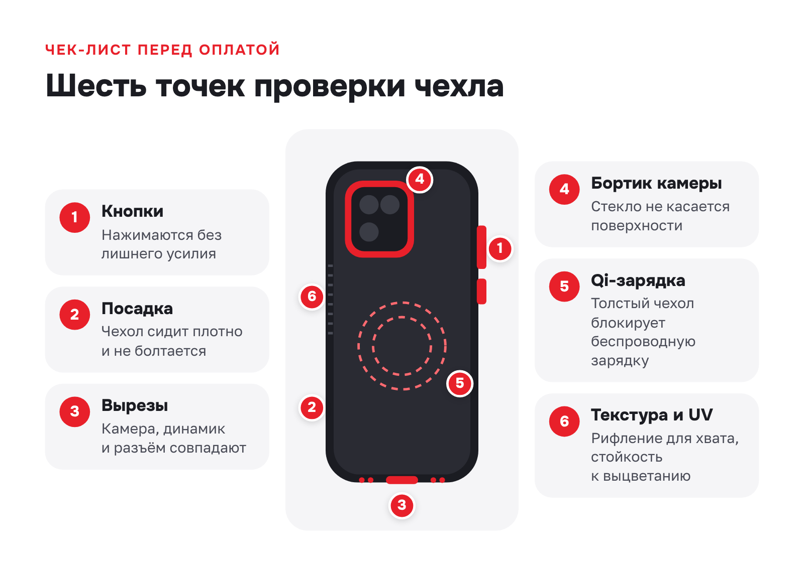

МТС Беларусь · E-commerce · продающие тексты
Продающие тексты для интернет-магазина мобильного оператора: бренд, модель и категория аксессуаров
О заказчикеМТС Беларусь (СООО «Мобильные ТелеСистемы») — оператор мобильной связи в Беларуси. Продаёт смартфоны, гаджеты и аксессуары через интернет-магазин shop.mts.by и развивает цифровые сервисы, в том числе мобильную ЭЦП МТС ID.
Задача
Написать продающие SEO-тексты для страниц интернет-магазина shop.mts.by — брендов, моделей и разделов аксессуаров: объяснить, чем хорош товар и как выбрать подходящий вариант, и привести покупателя к заказу в МТС с рассрочкой, гарантией и доставкой по Беларуси.
Решение
Каждую страницу строила по одной схеме, но с разной подачей: для бренда — обзор линеек и разница между моделями, для карточки товара — главная особенность модели и сценарии использования, для категории аксессуаров — виды, материалы и чек-лист выбора. Ключевые запросы встроены в живой текст, блок «Преимущества покупки в МТС» собран из условий магазина: рассрочки, кредита, «Мобильной защиты», доставки и самовывоза.
Результат
22 текста для каталога за февраль 2026 года — умные часы Apple, Huawei, Xiaomi, HONOR, Garmin, смартфоны, зарядные устройства, чехлы, защитные стёкла, колонки. В подборке — три страницы разного типа; характеристики без подтверждения смягчены, инфографика визуализирует линейку, устройство часов и выбор чехла.
Продающие тексты для интернет-магазина МТС
Три текста для shop.mts.by — страница бренда, карточка модели и раздел аксессуаров. В каждом описание товара сочетается с советами по выбору, а завершает его блок о преимуществах покупки в МТС: рассрочке, гарантии, доставке по Беларуси.
Умные часы Garmin
Страница бренда в каталоге: shop.mts.by/gadgets/smart-watch/garmin/
Если и есть название, ставшее синонимом прочных спортивных часов, то это Garmin. Умные часы бренда — не просто гаджеты, а полноценные инструменты для тех, кто серьёзно относится к здоровью и тренировкам. Все модели совместимы со смартфонами на Android и iOS.
Базовый набор функций един для любой серии: круглосуточный мониторинг здоровья, GPS-навигация, сенсорный экран и каталог циферблатов и виджетов, который расширяется через приложение Connect IQ. Стоимость зависит от линейки, материала корпуса и батареи, но даже начальные модели дают больше аналитики, чем многие конкуренты.
Обзор ключевых линеек
Fenix — премиальные часы для серьёзных спортсменов: бегунов, велосипедистов, любителей тренажёрного зала и горнолыжного склона. В них многодиапазонный GPS, расширенные карты, навигационные инструменты на запястье и оценка готовности к тренировкам. Корпус из титана или нержавеющей стали проверен на термостойкость, ударопрочность и водостойкость. Аккумулятор обеспечивает до 16 дней работы в режиме смарт-часов.
Forerunner — флагманская линейка Garmin для бегунов любого уровня. В каталоге МТС представлены три основные модели, и выбор между ними сводится к тому, насколько глубокая аналитика вам нужна.

Forerunner 165 подойдёт тем, кому пока не нужны дополнительные функции, но важны точность данных и надёжный GPS. Forerunner 265 добавляет ежедневные рекомендации по тренировкам, время восстановления, готовность к соревнованиям и встроенное хранилище музыки — смартфон на пробежку можно не брать. Forerunner 965 рассчитан на тех, кто серьёзно настроен на результат: мультиспорт, батарея до 23 дней в режиме смарт-часов и до 31 часа с GPS, продвинутая аналитика и яркий экран.
Цены на Forerunner растут вместе с функциональностью и автономностью. Экраны старших моделей защищены стеклом Corning Gorilla Glass или сапфиром.
Умные функции для здоровья и спорта
Расширенный мониторинг здоровья — одна из сильных сторон Garmin. Встроенные датчики отслеживают широкий спектр показателей:
- пульсоксиметр измеряет уровень кислорода в крови (SpO2) — это полезно для контроля нагрузки на высоте;
- оптический датчик пульса фиксирует частоту сердечных сокращений круглосуточно;
- вариабельность сердечного ритма (HRV) помогает оценить готовность организма к нагрузкам;
- трекер сна анализирует фазы отдыха и каждое утро выставляет оценку качества сна;
- Body Battery показывает запас энергии и помогает планировать активность в течение дня.
Специализированные спортивные режимы — ещё одно преимущество. В часах есть профессиональный мультиспорт-режим и отдельные программы для бега, велоспорта, плавания, скалолазания, горных лыж, гольфа и десятков других видов активности. Бегунам пригодится функция PacePro — навигатор по маршруту и темпу. Чтобы добавить новый виджет или циферблат, достаточно установить дополнение из каталога Connect IQ, где тысячи приложений от сторонних разработчиков.
Преимущества покупки часов Garmin в МТС
В МТС представлены часы Garmin от начальных до топовых моделей. Покупателям доступны:
- конкурентные цены с учётом скидок и регулярных акций;
- доставка по всей Беларуси, включая регионы, — от 1 дня;
- рассрочка до 24 месяцев и кредит без первого взноса;
- гарантия производителя и программа «Мобильная защита»;
- консультанты, которые помогут установить приложение и разобраться с настройками;
- круглосуточная поддержка по телефону и онлайн.
Выбирайте Garmin, если для вас важны точность данных, автономность и проверенное качество спортивной электроники. Оформить заказ можно на сайте или в любом салоне МТС — с самовывозом или доставкой на дом. Все доступные модели собраны в фильтре каталога, а наличие конкретных часов легко уточнить по номеру 210.
Huawei Watch D2
Карточка модели: shop.mts.by/gadgets/smart-watch/huawei/watch-d2/
Huawei Watch D2 — смарт-часы с функцией суточного мониторирования артериального давления прямо на запястье. Модель получила тонкий корпус, яркий AMOLED-экран диагональю 1,82 дюйма с пиковой яркостью 1500 нит и встроенную ультраузкую механическую манжету шириной 26,5 мм. Циферблаты, виджеты и собственные заставки настраиваются под вкус владельца.
Функции смарт-часов Huawei Watch D2
Главное отличие Huawei Watch D2 от большинства моделей на рынке — медицинский подход к контролю здоровья. Встроенный датчик давления работает в паре с механической манжетой: в режиме суточного мониторинга часы проводят измерения каждые 30 минут и формируют профиль давления за сутки. Кроме того, они оценивают восемь ключевых показателей состояния организма одним касанием.

Корпус выдерживает ежедневную активность, а часы удобно носить круглосуточно — так данные собираются без пропусков. Батареи хватает до шести дней автономной работы, быстрая зарядка восполняет энергию за час с небольшим.
Спортивные возможности не ограничены базовым набором:
- режимы тренировок — от бега до йоги и скалолазания;
- встроенная спутниковая навигация — маршрут фиксируется без смартфона;
- мониторинг температуры кожи и уровня кислорода в крови — контроль нагрузки в реальном времени;
- анализ качества сна с разбивкой по фазам — помогает скорректировать режим дня.
Повседневные функции тоже на месте: уведомления со смартфона, бесконтактная оплата и смена циферблатов доступны прямо с экрана.
Преимущества покупки в МТС
В магазине МТС в Минске и на сайте shop.mts.by можно купить Huawei Watch D2 по выгодной цене. На часы распространяется официальная гарантия, рассрочку или кредит можно оформить прямо при заказе, а дополнительная страховка покроет случайные повреждения. Консультанты помогут подобрать размер ремешка и объяснят характеристики модели. Поддержка работает круглосуточно, доставка охватывает всю Беларусь, а регулярные скидки снижают стоимость.
Чехлы для телефонов
Раздел аксессуаров: shop.mts.by/accessories/protection/covers/
Грамотно подобранный чехол продлевает жизнь смартфону. В каталоге МТС легко купить чехол для телефона под любую модель — от Honor до iPhone.
Почему смартфону нужен чехол
Даже аккуратный владелец не застрахован от случайного падения гаджета. Чехол смягчает удар, защищает заднюю панель от царапин, а углы — от сколов. Материал и дизайн помогают подчеркнуть стиль владельца, а рельефная текстура улучшает хват: телефон перестаёт выскальзывать из рук.
Виды чехлов для телефонов
Тип чехла подбирают под приоритеты: минимальный вес, защита со всех сторон или дополнительные функции. Каждый формат рассчитан на свой сценарий, поэтому перед покупкой стоит решить, что важнее — компактность, ударостойкость или расширенные возможности.

Накладка закрывает корпус сзади и по бокам, оставляя экран открытым; кнопки громкости и питания нажимаются через тонкие вставки, а прозрачный вариант сохраняет оригинальный цвет смартфона. Бампер защищает торцы и углы — самые уязвимые при падении зоны — и почти не добавляет толщины; его делают из металла или силикона. Книжка закрывает телефон со всех сторон, включая экран, а некоторые модели позволяют поставить смартфон горизонтально для просмотра видео. Чехол со встроенным аккумулятором подзаряжает телефон в течение дня и выручает тех, кто часто остаётся без розетки.
Какой материал выбрать
От материала зависят долговечность, тактильные ощущения и степень защиты. На рынке преобладают три варианта, и у каждого свои сильные и слабые стороны.
| Материал | Плюсы | Минусы |
|---|---|---|
| Силикон | Мягкий, гибкий, хорошо амортизирует, самый доступный | Со временем может желтеть |
| Пластик (поликарбонат) | Лёгкий и жёсткий, эффективно распределяет энергию удара | При сильном падении может треснуть |
| Кожа | Презентабельный вид, приятная текстура, защищает от царапин | Требует бережного обращения, дороже остальных |
Для повседневной носки обычно выбирают силикон, для деловой обстановки лучше подойдут кожаные модели.
Как выбрать чехол для телефона
Чтобы купить чехол на телефон в Минске и не разочароваться, проверьте его до оплаты. Хороший аксессуар не мешает пользоваться смартфоном и прослужит весь срок его службы.

Начните с кнопок: в некачественном чехле на них приходится давить сильнее. Чехол должен плотно сидеть и не болтаться, а вырезы под камеру, динамик и разъём зарядки — точно совпадать с элементами смартфона. Если вы заряжаете телефон без провода, учтите, что толстые чехлы блокируют Qi-зарядку. Бортик вокруг камеры не даёт стеклу касаться поверхности, рифлёная текстура улучшает хват, а устойчивость к ультрафиолету не даёт чехлу выцвести.
6 причин купить чехол для телефона в МТС
Тем, кто хочет купить чехол на смартфон с гарантией качества, МТС предлагает шесть весомых аргументов:
- Большой выбор — накладки, книжки и бамперы для Apple, Samsung, Xiaomi.
- Рассрочка — чехол можно заказать вместе со смартфоном без первого взноса.
- Цены — регулярные акции снижают стоимость.
- Доставка по Минску и Беларуси за 1–3 дня.
- Возврат — удобная процедура для покупателей.
- Салоны — в крупных городах Беларуси чехол можно примерить лично.
Совместив онлайн-заказ с самовывозом, вы сэкономите время и получите покупку в тот же день.